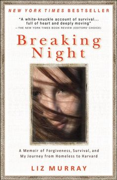

Breaking Night is the stunning memoir of a young woman who at age fifteen was living on the streets,
and who eventually made it into Harvard.Liz Murray was born to loving but drug-addicted parents in the Bronx.
In school she was taunted for her dirty clothing and lice-infested hair,
eventually skipping so many classes that she was put into a girls' home.
At age fifteen, when her family finally unraveled, Murray found herself on the streets.